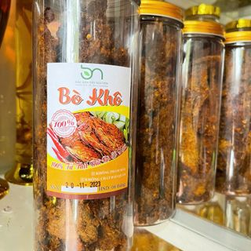
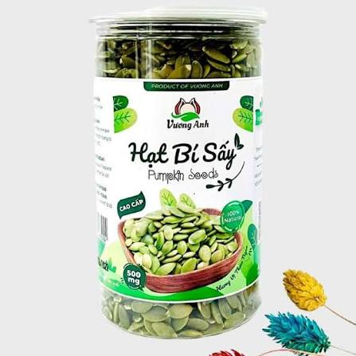
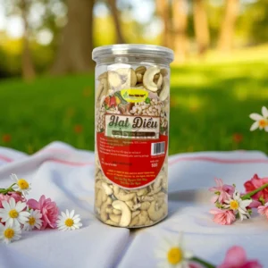
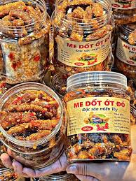

Bò khô
Bò khô Tây Nguyên thơm ngon đậm vị, được tẩm ướp gia vị tỉ mỉ, sấy khô tự nhiên giữ nguyên độ ngọt dai của thịt bò rẫy.

Ca Cao nguyên chất
Bột ca cao nguyên chất từ vùng đất đỏ Đắk Lắk, hương thơm nồng nàn, vị đắng thanh tự nhiên giàu giá trị dinh dưỡng.

Hạt bí sấy
Hạt bí sấy khô tự nhiên, hạt to mẩy, giòn bùi thơm ngậy, món ăn vặt lành mạnh cho cả gia đình.

Hạt điều
Hạt điều rang muối thơm giòn, béo bùi chuẩn vị nông sản Tây Nguyên chất lượng cao.

Hạt Mắc Ca
Hạt mắc ca Tây Nguyên nứt vỏ tự nhiên, hạt màu trắng sữa thơm giòn béo ngậy được ví như nữ hoàng quả khô.

Me dốt ớt đỏ
Me dốt chua ngọt thấm vị muối ớt cay nồng, món ăn vặt khoái khẩu chuẩn vị đặc sản đường phố.